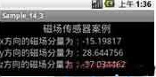

Android 磁场传感器
本节继续介绍Android平台的另一个传感器--磁场传感器，该传感器主要读取的是磁场的变化，通过该传感器便可开发出指南针、罗盘等磁场应用。
该传感器读取的数据同样是空间坐标系三个方向的磁场值，其数据单位为uT，即微特斯拉。接下来通过对之前姿态传感器案例的更改，来完成磁场数据的读取，步骤如下。
新建一个Android项目，取名为Samples。
准备字符串资源，用下列代码替换strings.xml中原有的代码。
<xml version="1.0" encoding="utf-8"?><resources>
<string name="hello">Hello World, Sample<string>
<string name="app_name">Sample<string>
<string name="title">磁场传感器案例string>
<string name="myTextView1">x方向的磁场分量为：<string>
<string name="myTextView2">y方向的磁场分量为：<string>
<string name="myTextView3">z方向的磁场分量为：<string>
<resources>
说明：定义需要的字符串资源。
搭建界面。本案例的main.xml与加速度案例中的完全相同，读者可将其复制过来。
添加网络权限。与前面案例相同，在此不再赘述。
private SensorListener mySensorListener = new SensorListener() { @Override
public void onAccuracyChanged(int sensor, int accuracy) {
}
// 重写onAccuracyChanged方法
@Override
public void onSensorChanged(int sensor, float[] values) {
// 重写onSensorChanged方法
if (sensor == SensorManager.SENSOR_MAGNETIC_FIELD) {
// 只检查磁场的变化
myTextView1.setText("x方向的磁场分量为：" + values[0]);
// 将数据显示到TextView
myTextView2.setText("y方向的磁场分量为：" + values[1]);
// 将数据显示到TextView
myTextView3.setText("z方向的磁场分量为：" + values[2]);
// 将数据显示到TextView
}
}
};
@Override
protected void onResume() {
// 重写的onResume方法
mySensorManager.registerListener(
// 注册监听
mySensorListener,
// 监听器SensorListener对象
SensorManager.SENSOR_MAGNETIC_FIELD,
// 传感器的类型为读取
SensorManager.SENSOR_DELAY_UI
// 频率
);
super.onResume();
}
说明：该段代码与前面案例不同的是第6行检查的磁场的变化，然后将三个方向上的分量分别显示到TextView中，而在注册监听时，同样将那个传感器的类型设置为SENSOR_MAGNETIC_FIELD表示只读取磁场值。
运行sensorsimulator工具，选中magnetic field使得该工具模拟磁场的变化，然后运行该案例，将观察到如图所示的效果。
